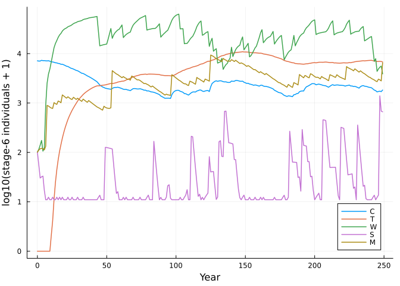
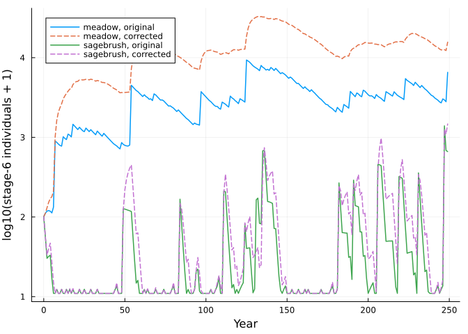
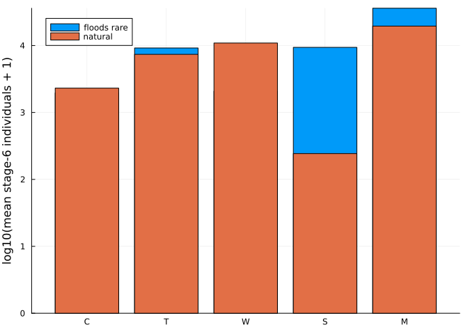

Riparian plant guilds: a community linked by space
Simon Frost
ENV["GKSwstype"] = "100"
using MatrixCommunityModels
using Plots, Random, StatisticsThe model
Lytle et al. (2017) modelled five riparian plant guilds on the Yampa River, each with six stages: cottonwood (C, hydroriparian tree), tamarisk (T, xeroriparian shrub), willow (W, hydroriparian shrub), sagebrush (S, desert shrub) and meadow (M). Floods and droughts kill a stage-specific fraction of each guild. The dependency assumption is that seedlings can only establish on free space: the space occupied by all guilds after the year’s mortality is subtracted from the total area K, and each guild’s recruitment is proportional to what is left.
This differs from the fish model in two ways that the package has to express:
- recruitment does not depend on how many adults there are (one tree can seed all free space), so it is an additive
recruitmentterm rather than a matrix entry; - the space a guild occupies depends on the year, because it is counted after mortality, so its
occupancyis a function of the state and the environment.
m = riparian_model()
m.communityOpenCommunity(C, T, W, S, M; pools = space, willow_adults)Each year’s environment is derived from one row of the 1916-1998 flow record at Maybell: whether there was a flood or drought, and the seed-release overlap and drawdown survival terms for cottonwood and tamarisk.
m.envs[1](year = 1916, flood = 1.0, drought = 0.0, nonflood = 0.0, cprop = 0.9210526315789473, tprop = 0.26785714285714285, decline = 0.6634536565168259, tdecline = 0.9063376969418638)Agreement with the original R code
The published script draws a random year from the record at each step. The reference trajectory rip_seed_traj.csv was produced by that script with a fixed seed, and records which year was drawn, so the same sequence can be replayed here.
ref_file = joinpath(pkgdir(MatrixCommunityModels), "test", "reference", "rip_seed_traj.csv")
ref = permutedims(reduce(hcat, [parse.(Float64, split(l, ",")) for l in readlines(ref_file)[2:end]]))
drawn = Int.(ref[1:249, 2])
sol = project(m.community, m.n0, m.envs[drawn])
N = ref[:, 5:34]
(identical = count(sol.u .== N), of = length(N),
max_relative_difference = maximum(abs.(sol.u .- N) ./ max.(abs.(N), 1.0)))(identical = 7496, of = 7500, max_relative_difference = 3.9221753509148656e-16)Thirty states over 250 years agree to within a few parts in 10^16.
guilds = species_names(m.community)
mature = reduce(hcat, [sol[g][:, 6] for g in guilds])
plot(sol.t, log10.(mature .+ 1); label = permutedims(String.(guilds)), xlabel = "Year",
ylabel = "log10(stage-6 individuals + 1)", lw = 1.5)
What the wiring shows
The original community has two pools, not one:
pool_names(m.community)2-element Vector{Symbol}:
:space
:willow_adultsspace is the dependency assumption. willow_adults is there because the published script assigns the willow guild’s recruitment to the meadow guild, so meadow seedlings appear only when willow adults are present. In a script this is one variable name on one line; here a guild cannot see another guild except through a pool, so reproducing the behaviour required adding a wire, and the wire is visible.
The script also drops the stage-5 sagebrush and meadow individuals that do not mature, while still counting their space. riparian_model(corrected = true) removes both behaviours:
c = riparian_model(corrected = true)
pool_names(c.community)1-element Vector{Symbol}:
:spacecorr = project(c.community, c.n0, c.envs[drawn])
plot(sol.t, log10.([sol[:M][:, 6] corr[:M][:, 6] sol[:S][:, 6] corr[:S][:, 6]] .+ 1);
label = ["meadow, original" "meadow, corrected" "sagebrush, original" "sagebrush, corrected"],
xlabel = "Year", ylabel = "log10(stage-6 individuals + 1)", lw = 1.5, ls = [:solid :dash :solid :dash])
Both variants are kept: the original as a regression target, the corrected one as the model the paper describes.
Flow regimes
Projecting under a different flow regime only needs a different sequence of environments. Here the corrected model is run with years drawn at random from the whole record (floods in 57% of years) and with floods made rare (10% of years), comparing the mean number of stage-6 individuals of each guild after a 100-year burn-in. This is a single random sequence per regime, for illustration.
rng = Xoshiro(1)
floods = [e for e in c.envs if e.flood == 1]
others = [e for e in c.envs if e.flood == 0]
natural = [rand(rng, c.envs) for _ in 1:300]
fewer_floods = [rand(rng) < 0.1 ? rand(rng, floods) : rand(rng, others) for _ in 1:300]
function mean_mature(envs)
s = project(c.community, c.n0, envs)
[mean(s[g][101:end, 6]) for g in guilds]
end
a, b = mean_mature(natural), mean_mature(fewer_floods)
bar(repeat(String.(guilds); outer = 2), log10.([a; b] .+ 1);
group = repeat(["natural", "floods rare"]; inner = 5), ylabel = "log10(mean stage-6 individuals + 1)")
Reference
Lytle, D. A., Merritt, D. M., Tonkin, J. D., Olden, J. D. & Reynolds, L. V. (2017). Linking river flow regimes to riparian plant guilds: a community-wide modeling approach. Ecological Applications 27, 1338-1350. Code and data: https://doi.org/10.6084/m9.figshare.4652608